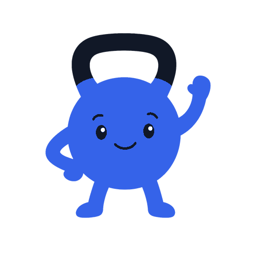

Log your way
Send training or meal details as text, voice, or OCR-assisted photos—directly in Telegram.

ChatFitSelf-hosted AI fitness assistant
ChatFit turns training and meal messages into structured history, and can carry preferences you explicitly save into future chats.
Source available · Structured records use local databases · Saved preferences are stored in a local database · Built with Gemini
Simple in use, useful over time
ChatFit keeps the interface conversational while quietly building the fitness history you never had time to maintain.
Send training or meal details as text, voice, or OCR-assisted photos—directly in Telegram.
ChatFit asks for missing details, confirms the entry, and stores structured data locally. The configured language model semantically classifies each approval reply instead of matching a fixed phrase list. The pending draft and reply are sent to that model; changes are reviewed again before writing. Pending approvals expire after five minutes, and an unrelated new message cancels the stale draft and is routed as a fresh request instead of being swallowed.
Explicitly save, update, or forget preferences. They remain available after a fresh chat or restart. When ChatFit generates a reply, all of your saved memories are sent to your configured AI model. If you enable tracing content capture, they may also be included in traces.
The payoff
Ask about recent progress or enable optional reviews. ChatFit combines your own history with the preferences you chose to save.
Recorded totals: 4,820 kg volume, 42 minutes, 5 km, and 18 sets. Average RPE: 7.
Create a Telegram bot and deploy the source-available app. Transient Telegram startup failures are retried five times; if they persist, the bot container restarts automatically unless you explicitly stop it.